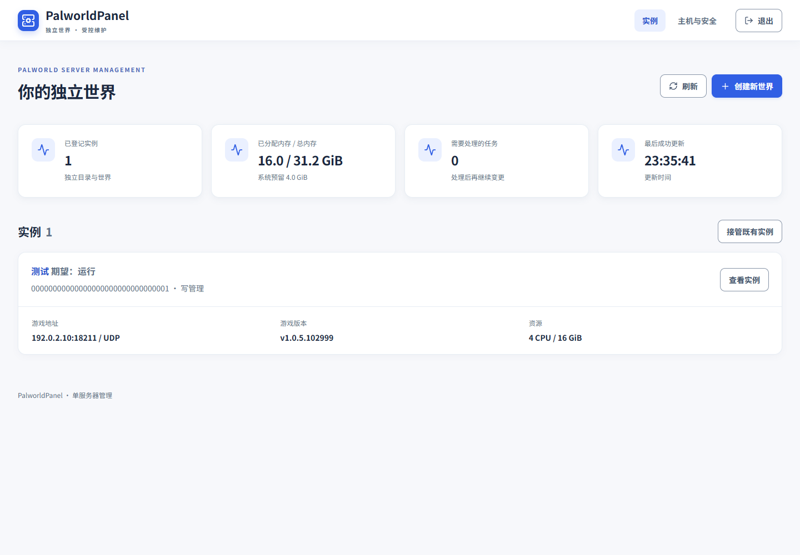
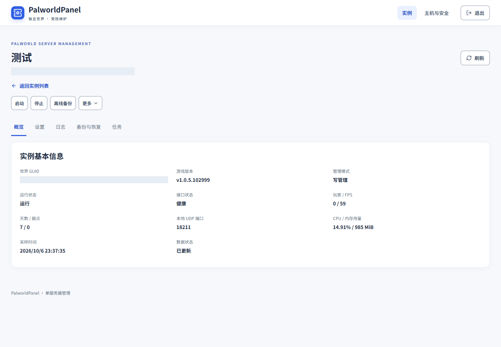
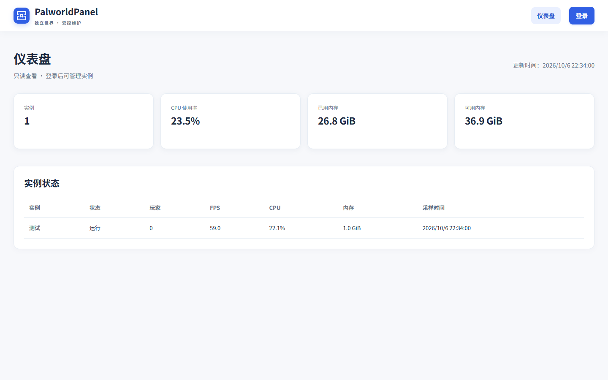
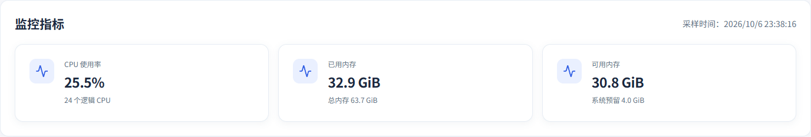
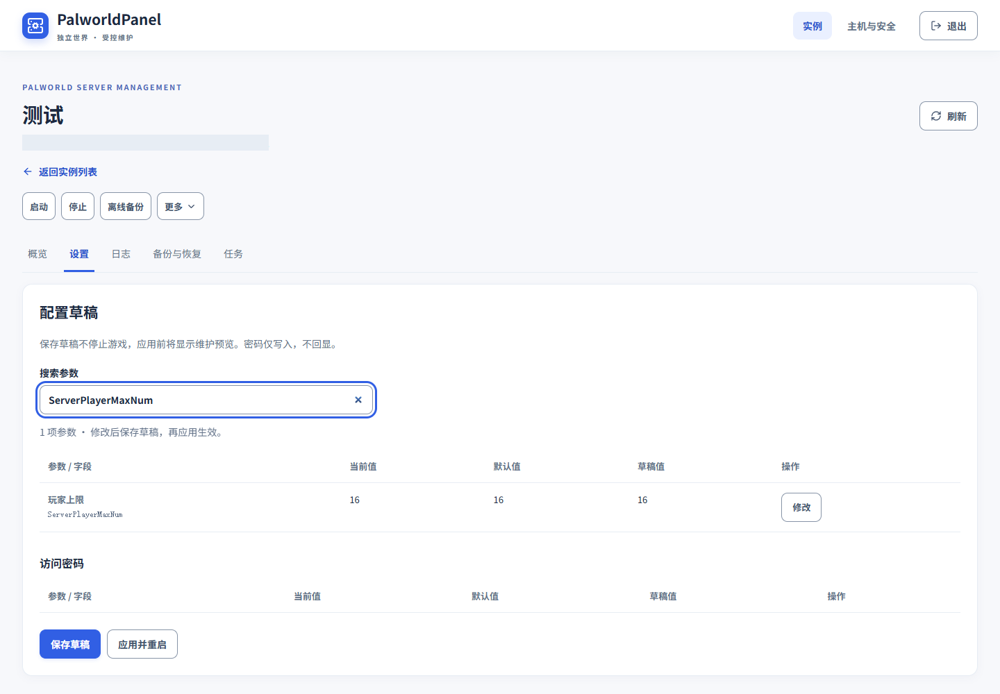
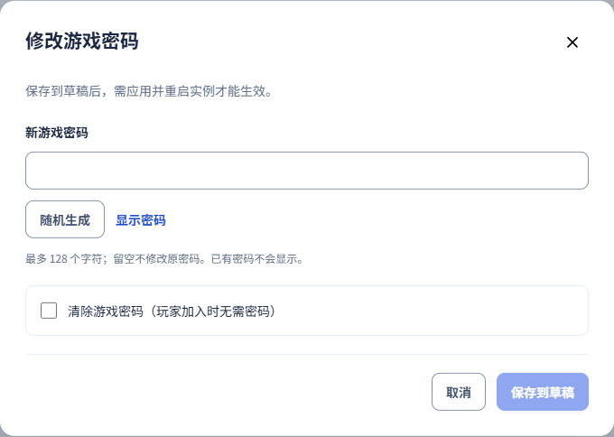
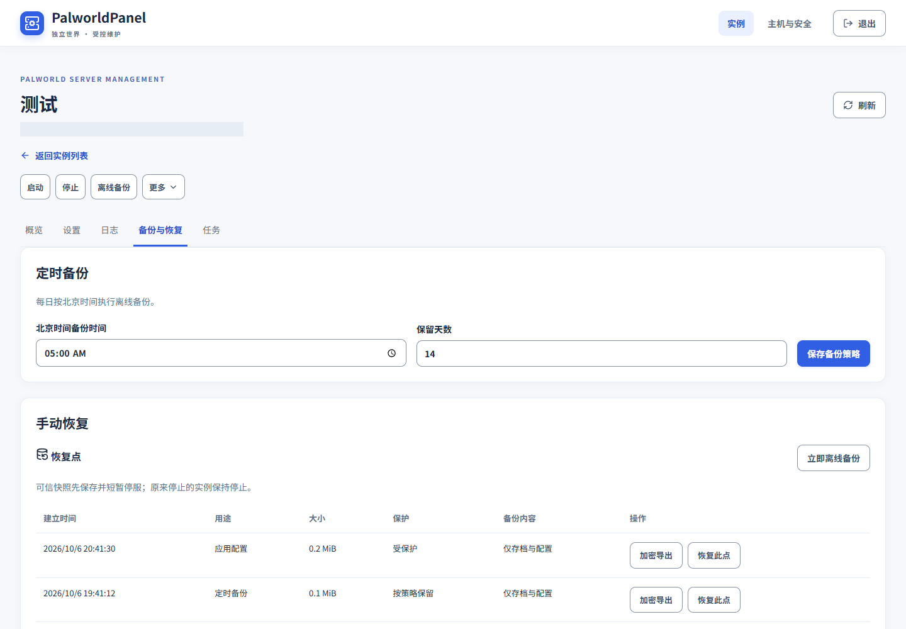
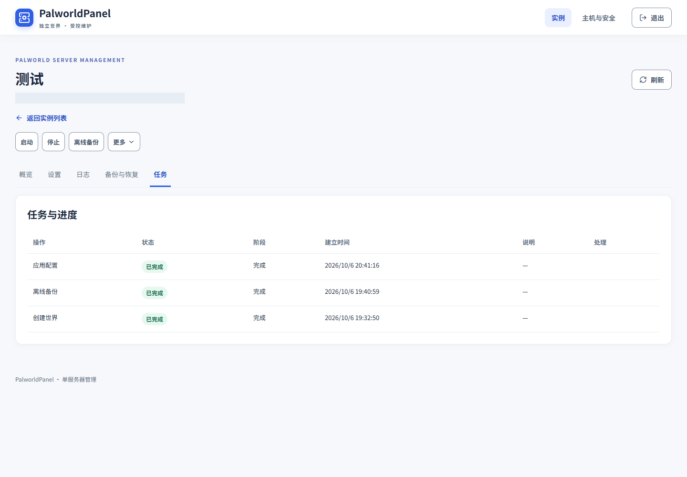

Features
Explore instance management, configuration drafts, backups, recovery and access control.
Independent worlds and instances
Each instance has its own save directory, container, passwords, ports, backups and task lock. Create a new world or take over an existing instance through a controlled workflow.
The instance list shows runtime status, game version, resource allocation and the game connection address. Instance details include an overview, settings, logs, backups and recovery, and tasks.




Dashboard and runtime status
Visitors on the IP allowlist can view the dashboard without signing in. Instance management requires authentication.
After creating an instance, follow initialization stages and task progress. Logs show the latest entries first. Host metrics, historical records and operation records have separate views.




Configuration and password drafts
Settings display their Chinese names and parameter fields and support search. Compare current, default and draft values; changed drafts are highlighted until applied. The management console currently uses Chinese.
Passwords can be entered manually or generated randomly. Only their configured or modified status is shown; passwords are never displayed in the settings table. Saving a draft does not change the game. After confirmation, applying a draft updates configuration and restarts the instance, with the apply button locked during the operation.




Backups and recovery
Scheduled backups and manual recovery have separate sections. Browse recovery points and export them with encryption. Use a separate export passphrase and store it securely after downloading.
Recovery and world ZIP import use controlled workflows, backing up and stopping the target instance when required. Restore only the selected world to avoid affecting other instances.


Maintenance and tasks
Start, stop, offline backup and actions in the More menu require confirmation. Tasks belong to each instance and record execution stages and outcomes.
Read confirmations carefully before upgrading, removing a container while keeping its data, or quarantining files. A healthy management API does not establish that a real game client can connect.


Platforms and access scope
On Windows, the panel runs as a system service and Palworld instances run through the Docker Desktop Linux engine. On Linux, both the panel and game run through Docker.
The panel has local Docker administration privileges and accepts only explicitly allowlisted private-network addresses. Public UDP forwarding is outside its management scope.
Share a world with friends: independent visitor sessions
Friends playing together can keep their own copy of the world backup. Share the world read-only link so they can sign in with the world ID and applied game password, without needing the host online or an administrator account.
Visitors can read basic information, search game settings, compare observed current values with defaults, read redacted logs and download existing offline snapshots for that world whenever needed. Downloading does not create a backup or stop the running game. Snapshot timestamps indicate the saved progress, not the download time.
Visitor sessions are separate from administrator sessions and cannot change settings, start or stop instances, create backups or restore them. Sessions expire after 30 minutes and require a new login. Applied game password or world identity changes invalidate previous sessions. Empty game passwords do not enable visitor access.
The plain ZIP contains world and player saves, excluding administrative configuration and passwords. It is separate from encrypted administrative backup exports; keep downloaded files safe. Friends must be able to reach the panel and their source IP must be allowlisted. Game connectivity alone does not grant panel connectivity.